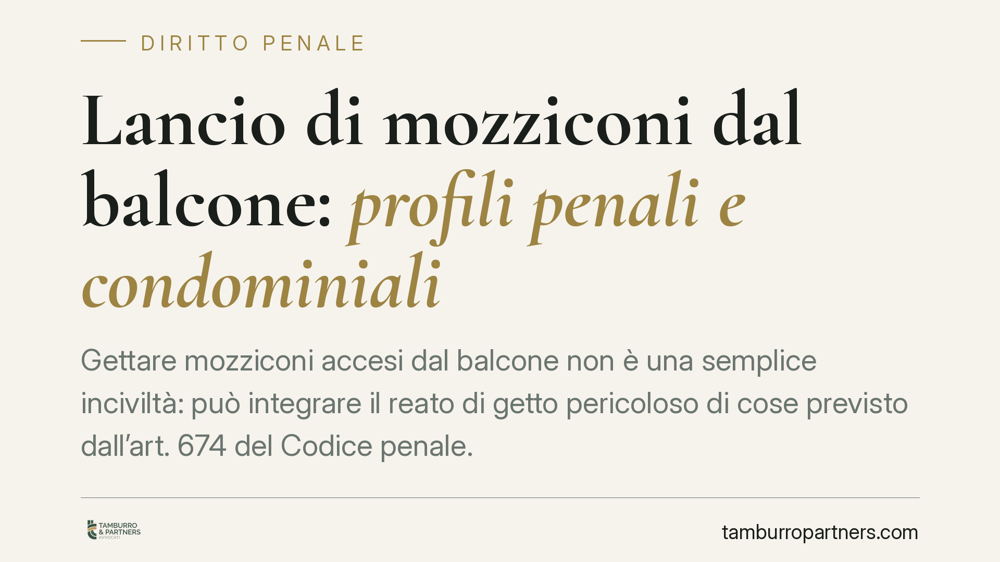

Lancio di mozziconi dal balcone: profili penali e condominiali
Gettare mozziconi accesi dal balcone non è una semplice inciviltà: può integrare il reato di getto pericoloso di cose previsto dall'art. 674 del Codice penale. La responsabilità è personale del trasgressore, ma il fenomeno tocca da vicino il danneggiato e l'amministratore condominiale. Ecco cosa dice la norma e come muoversi.

Il fatto e perché conta
Il lancio di mozziconi di sigaretta dai balconi è una condotta più diffusa di quanto si pensi, con effetti che vanno ben oltre il fastidio. Un mozzicone ancora acceso può bruciare tende, tappezzerie o superfici sottostanti e, in condizioni sfavorevoli, innescare un principio d'incendio. Sul piano giuridico, la questione non resta confinata alla sfera del decoro condominiale: entra nel perimetro del diritto penale.
Inquadramento normativo: l'art. 674 c.p.
La norma di riferimento è l'art. 674 del Codice penale, rubricato "Getto pericoloso di cose". La disposizione punisce chi getta o versa, in un luogo di pubblico transito o in un luogo privato ma di comune uso o altrui, cose atte a offendere, imbrattare o molestare persone.
Due precisazioni sono essenziali.
La prima: si tratta di una contravvenzione, non di un delitto. La distinzione conta perché le contravvenzioni sono reati di minore gravità, ma restano pur sempre illeciti penali, con le conseguenze che ne derivano in termini di procedimento e sanzione.
La seconda: è un reato di pericolo, non di danno. Non occorre, cioè, che l'oggetto lanciato abbia effettivamente colpito qualcuno o provocato un danno concreto. È sufficiente l'idoneità della condotta a offendere, imbrattare o molestare. Un mozzicone acceso che cade su un balcone sottostante o in un cortile di uso comune presenta, di regola, questa attitudine offensiva. La giurisprudenza di legittimità ha in più occasioni ricondotto all'art. 674 c.p. il getto di mozziconi e di piccoli oggetti dai balconi, valorizzando proprio il profilo del pericolo e della molestia.
Quanto alla procedibilità, il getto pericoloso di cose ex art. 674 c.p. è procedibile d'ufficio: non è quindi necessaria la querela della persona offesa. Chi subisce la condotta può presentare una denuncia, ma l'azione penale può essere avviata anche a prescindere da un'iniziativa formale del danneggiato, una volta acquisita la notizia di reato.
Implicazioni pratiche: chi risponde e di cosa
La responsabilità penale è personale: risponde chi materialmente compie il getto. Questo principio, apparentemente lineare, genera nella pratica la difficoltà più rilevante, ossia l'individuazione del trasgressore.
Nel contesto condominiale, il mozzicone che cade su un balcone o in un cortile raramente reca l'indicazione di chi lo ha lanciato. Provare la provenienza da una specifica unità immobiliare e, soprattutto, l'identità della persona che ha compiuto il gesto richiede elementi concreti: testimonianze, riprese, sequenze ripetute che restringano il campo. La mera coincidenza geografica non basta.
È utile distinguere le tre posizioni coinvolte.
- Il condomino trasgressore risponde in prima persona sul piano penale ed è tenuto, sul piano civile, al risarcimento degli eventuali danni.
- Il proprietario danneggiato può attivarsi con una denuncia e agire in sede civile per il ristoro dei danni subiti, a condizione di poter dimostrare la provenienza e l'autore della condotta.
- L'amministratore condominiale, pur non rispondendo per il fatto altrui, ha il compito di gestire le segnalazioni, sollecitare la cessazione delle condotte moleste e, ove opportuno, inserire nel regolamento condominiale previsioni chiare a tutela del decoro e della sicurezza.
Cosa fare in concreto
- Documentare la condotta. Annotare data, ora e ricorrenza degli episodi. La ripetitività è spesso decisiva per l'individuazione della provenienza.
- Raccogliere prove in modo lecito. Prima di utilizzare fotografie o riprese come elemento probatorio, è opportuno accertarne la conformità alla disciplina sulla riservatezza, evitando videosorveglianza indiscriminata di spazi altrui.
- Segnalare all'amministratore. Formalizzare la segnalazione per iscritto, così da tracciarla e sollecitare un intervento a livello condominiale.
- Valutare la denuncia. Trattandosi di reato procedibile d'ufficio, è possibile presentare denuncia alle autorità competenti, allegando gli elementi raccolti.
- Considerare la tutela risarcitoria. In presenza di danni concreti, verificare i presupposti per un'azione civile, tenendo conto dell'onere della prova gravante sul danneggiato.
La combinazione tra rilievo penale e dimensione condominiale rende questi episodi più delicati di quanto la loro apparente banalità suggerisca. Un approccio ordinato alla raccolta degli elementi è ciò che distingue una segnalazione destinata a restare senza seguito da un'iniziativa concretamente sostenibile.
---
*Contributo informativo a cura di Tamburro & Partners - Avv. Giuseppe Tamburro. Non costituisce parere legale.*
Ogni condominio ha una storia a sé.
Se gestisci un'amministrazione e vuoi un confronto su una specifica questione condominiale, scrivi allo studio. Ti rispondiamo entro un giorno lavorativo.